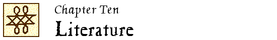

John Locke Chronology |
John Locke Manuscripts |
John Locke Resources |
John Locke Bibliography | ||

 2001
2001
New
Certain good : power, plain English and modern poetry / David Irving Rosen. – Thesis (Ph.D.)—Yale University, 2000.
Unverified.
2002
New
Eighteenth-century fiction and the law of property / Wolfram Schmidgen. – Cambridge : Cambridge University Press, 2002.
See p. 42-92 passim.
2003
“A forgotten poem by Locke” / Caroline Hunt. // IN: Locke studies. – 3 (2003):195-199.
Includes a reprint of the poem; from Britannia rediviva (1660) [Locke #1A]
LS 4:6
“ ‘Unhackneyed thoughts and winged words’ : Arnold, Locke, and the similes of ‘Sohrab and Rustum’.” – See entry in Chapter 3.
“Leaving her father’s house : Astell, Locke, and Clarissa’s body politic” / Leslie Richardson. // IN: Studies in eighteenth-century culture. – 34 (2004):151-171.
“Defoe’s ‘A true relation,’ personal identity, and the Locke-Stillingfleet controversy.” – See entry in Chapter 3.
2005
“Locke, Haywood, and consent.” – See entry in Chapter 7.
2006
“The people things make : Locke’s An essay concerning human understanding and the properties of the self.” – See entry in Chapter 3.
“John Locke’s ideology of education and William Blake’s ‘Proverbs of Hell’.” – See entry in Chapter 4.
“Wordsworth amongst the Aristotelians.” – See entry in Chapter 3.
“Pamela’s textual production : naming and literary property in Richardson’s Pamela” / Songyen Lin. // IN: NTU studies in language and literature. – 15 (2006):23-30.
Unverified.
“Escape from repetition : Blake versus Locke and Wordsworth.” – See entry in Chapter 3.
Power, plain English, and the rise of modern poetry / David Rosen. – New Haven : Yale University Press, ©2006.
See 1, “Prologue : the secret reference of John Locke” (p. 15-32)
LS 6:10
“Winding up the clock : the conception and birth of Tristram Shandy” / Dirk Vanderbeke. // IN: Fashioning childhood in the eighteenth century : age and identity / edited by Anja Müller. – Aldershot, Hants. ; Burlington, Vt. : Ashgate Publishing, 2006. – (Ashgate studies in childhood, 1700 to the present). – p. 179-188.
LS 7:18
2007
“ ‘In idea, a thousand nameless joys’ : secondary qualities in Arnauld, Locke, and Haywood’s Lasselia.” – See entry in Chapter 3.
2008
“The experimental history of the understanding from Locke to Sterne.” – See entry in Chapter 3.
2009
But he talked of the temple of man’s body : Blake’s revelation un-locked. – See entry in Chapter 3.
Organising poetry : the Coleridge circle, 1690-1698. – See entry in Chapter 3.
“Labor and commerce in Locke and early eighteenth-century English georgic.” – See entry in Chapter 8.
Rhetoric, science, & magic in seventeenth-century England. – See entry in Chapter 3.
“The melancholy Briton : Enlightenment sources of the Gothic” / Peter Walmsley. // IN: Enlightening Romanticism, romancing the Enlightenment : British novels from 1750 to 1832 / [edited by] Miriam Wallace. – Farnham, Surrey ; Burlington, VT : Ashgate Publishing, ©2009. – p. 39-53.
2011
“Blake’s anti-Lockian ‘bard’ ” / Paul Miner. // IN: Notes & queries. – 58 (2011):530-532.
“Nuances—Blake, Locke and ‘corporeal things’ ” / Paul Miner. // IN: Notes & queries. – 58 (2011):532-533.
LS 12:7
2013
The arbitrary power of language : Locke, Romantic writers, and the standardizers of English. – See entry in Chapter 3.
2014
“ ‘Orozes, King of Albania’ : an unpublished plot for a stage romance, by John Locke” / by David McInnis. // IN: Review of English studies. – 65 (2014):266-280.
Includes transcription of MS. Locke e. 6, ff. 68v-64v rev; with reproductions of ff. 68v and 67v.
LS 14:10
“Montaigne, Sir Ralph Bankes and other English readers of the Essais” / John O’Brien. // IN: Renaissance studies. – 28 (2014):377-391.
LS 14:12